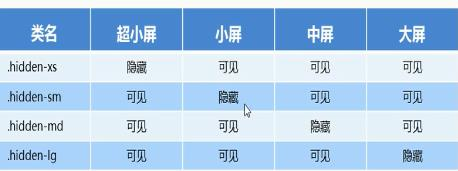

（就是利用媒体查询针对不同宽度的设备进行布局和样式的设置，从而设配不同设备的目的）
响应式布局容器
响应式需要一个父级作为布局容器，来配合子级元素来实现变化效果
原理：不同屏幕下，通过媒体查询来改变这个布局容器的大小，再改变里面子元素的排列方式和大小，从而实现不同屏幕下，看到不同的页面布局和样式变化
Bootstrap的基本使用**
Bootstrap使用方式
1.创建文件夹结构（html、css、js、图片、boorstrap库等）
2.创建html骨架
3.引入相关样式文件
4.书写内容
Bootstrap的布局容器
一.container
特点
1.响应式布局（宽度固定）
2.大屏（>=1200px）设置为1170px
3.中屏（>=992px）设置为970px
4.小屏（>=768px）设置为750px
5.超小屏（<=768px） 设置为100%
二.container-fluid
特点：
1.流式布局容器 宽度百分百
2.占据全部视口的宽度
3.适用于单独移动端开发
栅格系统（将页面布局划分为等宽的列，然后通过列数的定义来模块化页面布局）
bootstrap 将container分为最多12等份
栅格系统的使用
通过一系列的行和列的组合来创建页面布局
1.先写行（row），再把列（col）放到其中，row必须放到container中
2.必须添加类前缀
3.col-xs 超小 col-sm 小 co-md 中等 col-lg 大
4.如果孩子分数相加小于12 则占不满整个container
5.如果孩子分数相加大于12 则另起一行显示
6.每一列默认有左右15px的padding
7.可以对一行同时设置多个类名
8.bootstrap是通过类名来设置样式的 如通过类名添加对应小图标
1 <div class="container">
2 <div class="row">
3 <div class="col-lg-3">1</div>
4 <div class="col-lg-3">2</div>
5 <div class="col-lg-3">3</div>
6 <div class="col-lg-3">4</div>
7 </div>
8 <!-- 如果孩子分数相加小于12 则占不满整个container -->
9 <div class="row">
10 <div class="col-lg-3">1</div>
11 <div class="col-lg-3">2</div>
12 <div class="col-lg-3">3</div>
13 <div class="col-lg-1">4</div>
14 </div>
15 <!-- 如果孩子分数相加大于12 则另起一行显示 -->
16 <div class="row">
17 <div class="col-lg-3">1</div>
18 <div class="col-lg-3">2</div>
19 <div class="col-lg-3">3</div>
20 <div class="col-lg-4">4</div>
21 </div>
22 </div>
列嵌套：每一列中可以嵌套多个列实现列嵌套，嵌套的列最好用row包住消去padding保证占满整个父级列
1 <div class="container">
2 <div class="row">
3 <div class="col-md-4">
4 <div class="row">
5 <div class="col-md-6">a</div>
6 <div class="col-md-6">b</div>
7 </div>
8 </div>
9 </div>
10 </div>
列偏移：利用col-md-offset-x 实现左偏移x
1 <div class="container">
2 <div class="row">
3 <div class="col-md-4">
4 zuoe
5 </div>
6 <div class="col-md-4 col-md-offset-4">
7 yy
8 </div>
9 </div>
10 </div>
列排序：利用col-md-push-x实现向右推x份 col-md-pull-x向左拉x列
1 <div class="container">
2 <div class="row">
3 <div class="col-md-4 col-md-push-8">1</div>
4 <div class="col-md-8 col-md-pull-4">2</div>
5 </div>
6 </div>
响应式工具 hidden-xs hidden-sm hidden-md hidden-lg 即在对应后缀屏幕大小时隐藏 与之相反的是 visible-xs（sm、md、lg）在某个大小时才显现
